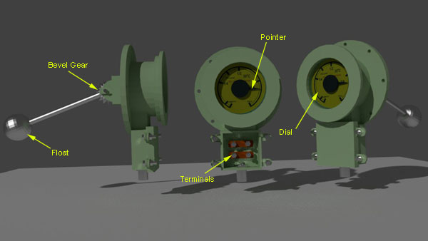

Magnetic Oil Gauge or MOG | Magnetic Oil Level Indicator of Transformer
This device is used to indicate the position of transformer insulating oil level in conservator of transformer. This is a mechanical device. Magnetic oil level indicator of transformer consists of mainly three parts-
- One float,
- Bevel gear arrangement and
- An indicating dial.
Construction of Magnetic Oil Gauge or MOG
Let’s explain the construction of magnetic oil gauge or MOG from its dial parts. The dial of this device has scale from empty to full. It has some intermediate divisions such as 1/4, 1/1, 3/4. The prescribed oil level at either 30°C or 35°C ambient temperature may also be indicated on the dial. A mercury switch and bevel gear is fixed with pointer. When pointer rotates, the alignment of mercury switch also changes according to the angle of rotation of the pointer. One ball type or drum type float is attached with a sufficiently long float arm. One unit of bevel gear is fitted on the other side of the float arm. Other unit of the bevel gear is magnetically coupled with pointer and mercury switch arrangement. The bevel gear arrangement is positioned inside the conservator tank of transformer and dial, pointer and mercury switch are positioned outside the conservator tank.
Working Principle of Magnetic Oil Gauge or MOG
All oil immersed distribution and electrical power transformers are provided with expansion vessel which is known as conservator of transformer. This vessel takes care of oil expansion due to temperature rise. When transformer insulating oil is expanded, the oil level in the conservator tank goes up. Again when oil volume is reduced due to fall in oil temperature, the oil level in the conservator goes down. But it is essential to maintain a minimum oil level in the conservator tank of transforer even at lowest possible temperature. All large electrical power transformers are therefore provided with a magnetic oil level indicator or magnetic oil gauge. In conventional conservator tank, a light weight hollow ball or drum floats on the transformer insulating oil. The float arm is attached with bevel gear as we already explained during the discussion on the construction of magnetic oil gauge. Naturally the position of the float goes up and down depending upon the oil level in the conservator and consequently the alignment of float arm changes. Consequently, the bevel gear rotates. This movement of bevel gear is transmitted to the pointer outside the conservator, as this pointer is magnetically coupled with the bevel gear. The pointer of magnetic oil level indicator is also incorporated with a mercury switch. So it is need not say, when oil level in the conservator goes up and down, the pointer moves on the MOG dial to indicate the actual level of transformer insulating oil in conservator tank. As the alignment of mercury switch changes along with the pointer, this switch closes and actuates an audible alarm when pointer reaches near empty position on the dial of magnetic oil gauge. This event alerts us for topping up oil in electrical power transformer.
In air cell conservator, the float arm is attached with air cell and alignment of float arm changes with the changing size of air cell due to the expansion and contraction of oil.
 by
by